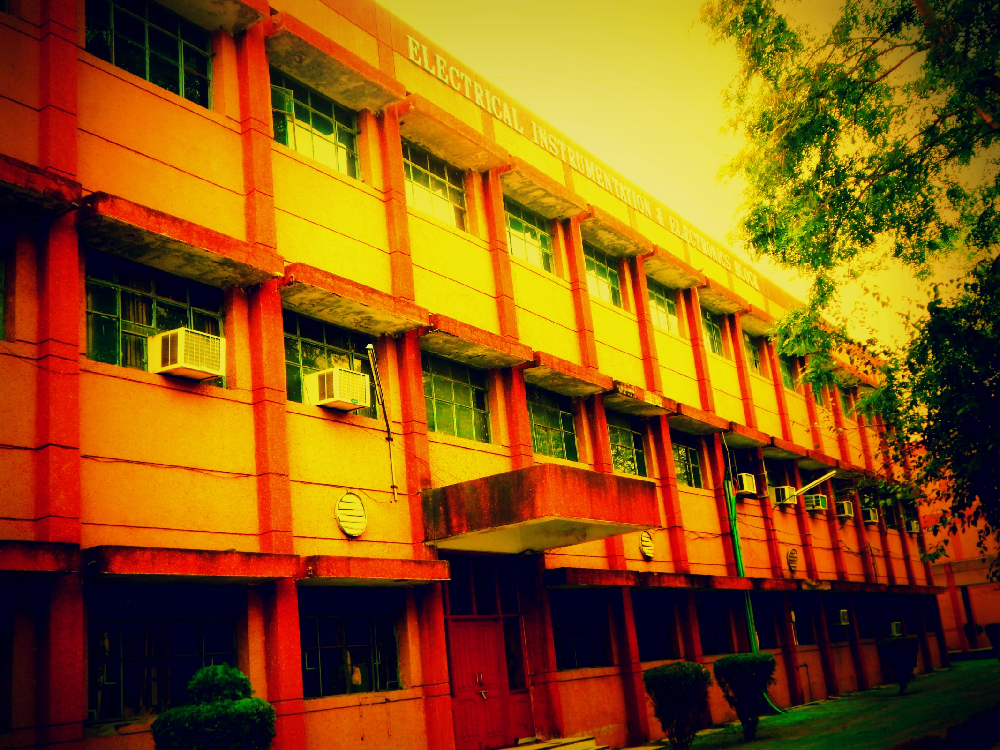

Schedular of Electrical Department

This page includes the information of all the subjects that are taught to students
who are in
Electrical Engineering.
Head of Department :Dr. J.S. Dhillon
Office phone
: 01672-253120, 01672- 253119
At present, Electrical and Instrumentation Engineering department is poised to impart technical education related to the development of manpower, from
the level of skilled workers to the engineering post-graduates. The department caters to the manpower and technical requirements of various sophisticated
and household industries such as petro-chemical, fertilizer, cement, power generation stations, bio-medical industries, etc. The department is in the process
of undertaking several projects from various Government funding agencies like MHRD, DST, etc. Moreover, the department is also planning to initiate industry
-institute interaction to share various resources and to provide consultancy services by organizing joint seminars, workshops and short term training programmes.
The department is running the Post-graduate M.Tech Course with specialization in Instrumentation and Control Engineering.